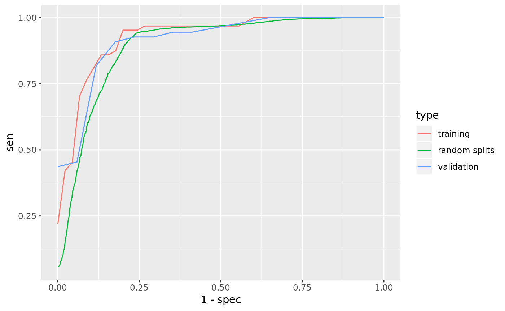

library(PheCAP)Load Data.
data(ehr_data)
data <- PhecapData(ehr_data, "healthcare_utilization", "label", 0.4)
data## PheCAP Data
## Feature: 10000 observations of 588 variables
## Label: 119 yes, 62 no, 9819 missing
## Size of training samples: 109
## Size of validation samples: 72Specify the surrogate used for surrogate-assisted feature extraction (SAFE). The typical way is to specify a main ICD code, a main NLP CUI, as well as their combination. In some cases one may want to define surrogate through lab test. The default lower_cutoff is 1, and the default upper_cutoff is 10. Feel free to change the cutoffs based on domain knowledge.
surrogates <- list(
PhecapSurrogate(
variable_names = "main_ICD",
lower_cutoff = 1, upper_cutoff = 10),
PhecapSurrogate(
variable_names = "main_NLP",
lower_cutoff = 1, upper_cutoff = 10),
PhecapSurrogate(
variable_names = c("main_ICD", "main_NLP"),
lower_cutoff = 1, upper_cutoff = 10))Run surrogate-assisted feature extraction (SAFE) and show result.
system.time(feature_selected <- phecap_run_feature_extraction(data, surrogates))## user system elapsed
## 186.796 0.180 186.978feature_selected## Feature(s) selected by surrogate-assisted feature extraction (SAFE)
## [1] "main_ICD" "main_NLP" "NLP56" "NLP93" "NLP160" "NLP161"
## [7] "NLP306" "NLP403"Train phenotyping model and show the fitted model, with the AUC on the training set as well as random splits
model <- phecap_train_phenotyping_model(data, surrogates, feature_selected)
model## Phenotyping model:
## $lasso_bic
## (Intercept) main_ICD main_NLP
## 1.636105 0.381872 1.342744
## main_ICD&main_NLP healthcare_utilization NLP56
## 0.000000 -1.242392 0.000000
## NLP93 NLP160 NLP161
## 0.000000 0.000000 0.000000
## NLP306 NLP403
## 0.000000 0.000000
##
## AUC on training data: 0.919
## Average AUC on random splits: 0.905Validate phenotyping model using validation label, and show the AUC and ROC
validation <- phecap_validate_phenotyping_model(data, model)
head(validation$valid_roc) # ROC table: validation data## cut pct acc tpr fpr tnr ppv fdr npv sen spec
## 1 0.001 1 0.7638889 1 1 0 0.7638889 0.2361111 1 1 0
## 2 0.002 1 0.7638889 1 1 0 0.7638889 0.2361111 1 1 0
## 3 0.003 1 0.7638889 1 1 0 0.7638889 0.2361111 1 1 0
## 4 0.004 1 0.7638889 1 1 0 0.7638889 0.2361111 1 1 0
## 5 0.005 1 0.7638889 1 1 0 0.7638889 0.2361111 1 1 0
## 6 0.006 1 0.7638889 1 1 0 0.7638889 0.2361111 1 1 0
## prec rec f1
## 1 0.7638889 1 0.8661417
## 2 0.7638889 1 0.8661417
## 3 0.7638889 1 0.8661417
## 4 0.7638889 1 0.8661417
## 5 0.7638889 1 0.8661417
## 6 0.7638889 1 0.8661417head(validation$train_roc) # ROC table: training data## cut pct acc tpr fpr tnr ppv fdr npv sen spec prec
## 1 0.001 1 0.587156 1 1 0 0.587156 0.412844 1 1 0 0.587156
## 2 0.002 1 0.587156 1 1 0 0.587156 0.412844 1 1 0 0.587156
## 3 0.003 1 0.587156 1 1 0 0.587156 0.412844 1 1 0 0.587156
## 4 0.004 1 0.587156 1 1 0 0.587156 0.412844 1 1 0 0.587156
## 5 0.005 1 0.587156 1 1 0 0.587156 0.412844 1 1 0 0.587156
## 6 0.006 1 0.587156 1 1 0 0.587156 0.412844 1 1 0 0.587156
## rec f1
## 1 1 0.7398844
## 2 1 0.7398844
## 3 1 0.7398844
## 4 1 0.7398844
## 5 1 0.7398844
## 6 1 0.7398844head(validation$split_roc) # ROC table: random splits## cut pct acc tpr fpr tnr ppv
## 1 0.001 0.9987879 0.5812121 1.00000 0.9971223 0.002877747 0.5807699
## 2 0.002 0.9971212 0.5825758 0.99975 0.9938404 0.006159570 0.5816466
## 3 0.003 0.9956061 0.5837879 0.99950 0.9906930 0.009307047 0.5824411
## 4 0.004 0.9940909 0.5853030 0.99950 0.9866368 0.013363165 0.5834254
## 5 0.005 0.9925758 0.5868182 0.99950 0.9825496 0.017450397 0.5844811
## 6 0.006 0.9910606 0.5883333 0.99950 0.9791214 0.020878610 0.5854047
## fdr npv sen spec prec rec f1
## 1 0.4192301 1.0000000 1.00000 0.002877747 0.5807699 1.00000 0.7323332
## 2 0.4183534 0.9991667 0.99975 0.006159570 0.5816466 0.99975 0.7329582
## 3 0.4175589 0.9985714 0.99950 0.009307047 0.5824411 0.99950 0.7334968
## 4 0.4165746 0.9985714 0.99950 0.013363165 0.5834254 0.99950 0.7342325
## 5 0.4155189 0.9985714 0.99950 0.017450397 0.5844811 0.99950 0.7349991
## 6 0.4145953 0.9985714 0.99950 0.020878610 0.5854047 0.99950 0.7357336validation## AUC on validation data: 0.894
## AUC on training data: 0.919
## Average AUC on random splits: 0.905phecap_plot_roc_curves(validation)
Apply the model to all the patients to obtain predicted phenotype.
phenotype <- phecap_predict_phenotype(data, model)
head(phenotype) # predicted probability## prediction
## 1 0.10460871
## 2 0.96628355
## 3 0.04977780
## 4 0.02643754
## 5 0.22712655
## 6 0.84893936